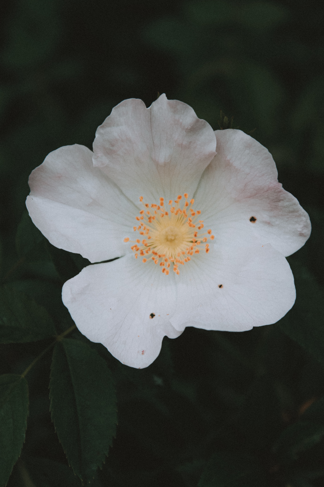

Posted photos 3-4 times per week to NunoLove’s Instagram profile
Created content such as selecting famous quotes and turning them into an image using tools such
as Adobe Photoshop
Wrote creative captions to encourage engagement on photos/posts.
Edited some photos of products and posted them to the Instagram profile
Posted 4-5 times per week on Instagram story
I looked through posts on Instagram that represent Nuno’s goals (ex. Creative art, positivity,
fashion related posts, etc.) and shared them to their story
Shared photos posted by influencers and other customers who are wearing Nuno products.
Communicated with influencers to work out a deal to post Nuno products, give free samples, etc.
Accomplishments
Chrissy Teigen posted on her story wearing a robe on social media on several occasions
Whitney Cummings wore a robe & tagged NunoLove
Keyword Research
Boostability: March 2019- October 2021

Worked with thousands of clients to research their company and services to find the best possible
keywords for them to target
Compared keywords to competitors
Keywords were later implemented into the website including meta titles, descriptions, H1 tags, and
content.
The selected/recommended keywords typically reached page one or improved drastically since the start
of the campaign.